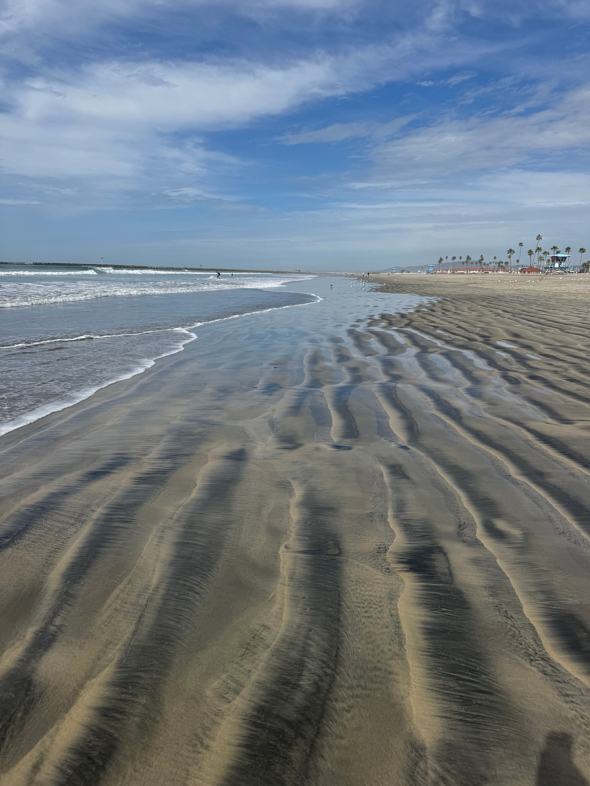

San Diego is one of my favorite cities because there is so much to do while still having a relaxed beach atmosphere. You can spend the day by the ocean, walk around different neighborhoods, visit museums, eat at great restaurants, or go out at night. I especially like how each part of San Diego feels a little different. Pacific Beach has the fun beach atmosphere, the Gaslamp Quarter has restaurants and nightlife, and there are also places like the USS Midway and Balboa Park to explore during the day.
My Favorite Place in San Diego
Pacific Beach

Photo by Petra Nesti on
Pexels
Used under the Pexels License.
Pacific Beach, also known as PB, is one of my favorite areas in San Diego. It has a long sandy beach, Crystal Pier, and a boardwalk that runs along the water. It is a great place to walk around, watch surfers, spend time at the beach, or watch the sunset. There are also a lot of restaurants, shops, and places to go nearby, which gives Pacific Beach a fun atmosphere during both the day and night.
Photo by Stephen Leonadrdi on
Pexels
Used under the Pexels License.
The Gaslamp Quarter is one of my favorite places to visit when I want to experience downtown San Diego. The neighborhood has a mix of historic buildings, restaurants, shops, bars, and nightlife. I also like the atmosphere of walking around the area, especially at night when everything is busy and lit up. The large Gaslamp Quarter sign is also one of the most recognizable sights in downtown San Diego.
Photo by DC's Photography on
Pexels
Used under the Pexels License.
The USS Midway Museum is a really unique place to visit in San Diego because the museum is located on an actual aircraft carrier. Visitors can walk through different areas of the ship, see aircraft on the flight deck, and learn what life was like for sailors aboard the carrier. It is also located along the San Diego waterfront, which makes the area around the museum fun to explore.
Photo by Zachary Sawchuk on
Pexels
Used under the Pexels License.
Balboa Park is another place I would recommend because there are so many different things to see in one area. The park is known for its gardens, museums, walking areas, and historic architecture. It is a good place to walk around and explore even if you do not plan on going inside every museum. It also gives visitors a completely different experience from the beaches and downtown areas of San Diego.